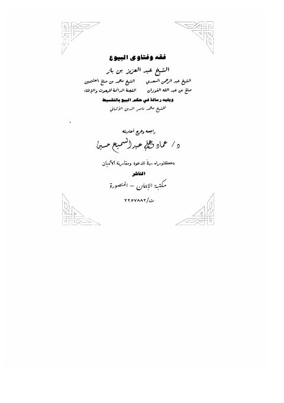

فقه وفتاوى البيوع ويليه رسالة في حكم البيع بالتقسيط
Authors: عبد العزيز بن عبد الله بن باز ، محمد بن صالح العثيمين ، صالح بن فوزان الفوزان ، عبد الرحمن بن ناصر السعدي
Editors: عماد علي عبد السميع
Publishers: مكتبة الإيمان
Download Downloads need an internet connection.
- Country
- المنصورة، مصر
- Edition
- 1
- Volumes
- 1
- Pages
- 200
- Type
- كتاب
- Category
- الفقه وأصوله
Description
▫️ العنوان: فقه وفتاوى البيوع ويليه رسالة في حكم البيع بالتقسيط ▪️ المؤلف: #عبد_العزيز_بن_باز • #السعدي • #ابن_عثيمين • #الفوزان ▫️ المحقق: #عماد_علي_عبد_السميع ▪️ الناشر: #مكتبة_الإيمان ▫️ بلد النشر: المنصورة، #مصر ▪️ الطبعة: 1 ▫️ عدد الأجزاء: 1 ▪️ الصفحات: 200 ▫️ نوع الوعاء: #كتاب ▪️ التصنيف الرئيسي: #الفقه_وأصوله ۪